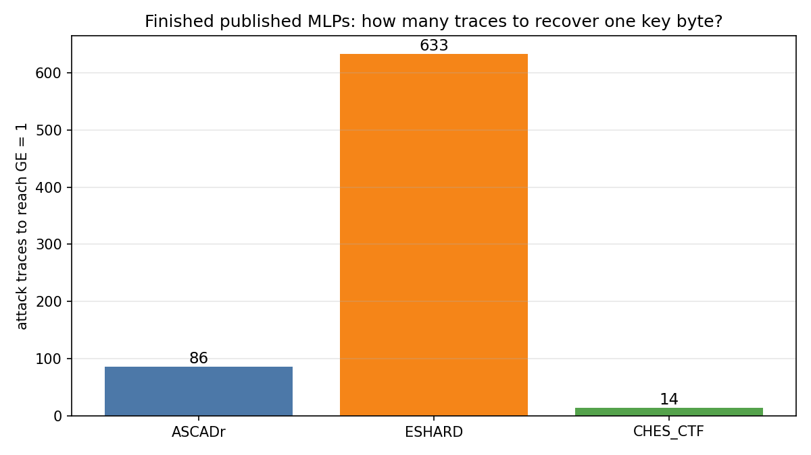
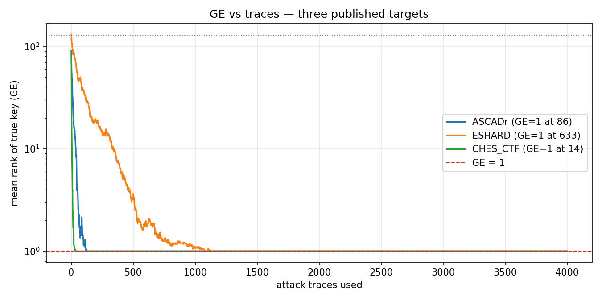

Chapter — How many traces
Chapter 7 showed how to multiply votes until guessing entropy reaches 1 — about 86 attack traces for the finished ASCADr MLP. This chapter asks what that number means, and why it is not tied to “100 training epochs.”
Claim
Traces to GE = 1 measures how hard it is to recover one key byte with a given attack pipeline on a given device. A larger number means each trace leaks less usable information under that attack — typically because the implementation’s countermeasures (masking, noise, measurement) leave a weaker per-trace signal.
That count is not related to how many epochs the network was trained. On ASCADr we happen to see ~86 traces and 100 epochs side by side; that similarity is a coincidence. Epochs belong to the learning clock (Chapter 8). Traces belong to the attack clock (Chapter 7).
Definition
After Chapter 7’s ranking procedure, guessing entropy (GE) is the mean rank of the true key over many random draws of attack traces. The smallest number of traces at which that mean rank hits 1 is traces to GE = 1.
For the finished ASCADr MLP (identity labels, epoch-100 checkpoint) that number is 86.
Coincidence to discard
| Quantity | Clock | Example (ASCADr MLP) |
|---|---|---|
| Training epochs | Learning | 100 checkpoints |
| Traces to GE = 1 | Attack | 86 |
Same finished model appears in both stories. The numbers are not required to match and do not explain each other.
Evidence: three published targets
The repository ships finished MLPs and datasets for ASCADr, ESHARD, and CHES_CTF. Using each target’s published leakage model and final checkpoint, the same GE procedure (40 random draws, up to 4,000 attack traces, seed 42) gives:
| Target | Leakage labels | Traces to GE = 1 | Setup (short) |
|---|---|---|---|
| CHES_CTF | Hamming weight (9) | 14 | power CTF target; MLP epoch 200 |
| ASCADr | identity (256) | 86 | masked power; MLP epoch 100 |
| ESHARD | Hamming weight (9) | 633 | masked EM; MLP epoch 100 |


The bars are not equal. Under this repo’s published pipelines, CHES_CTF is recovered with far fewer traces than ASCADr; ESHARD needs hundreds more. Traces to GE = 1 moves with the system. ASCADr’s training run length (100 epochs) does not explain ASCADr’s 86, and cannot explain 14 or 633 on the other targets.
The comparison is produced by analysis/05_traces_to_ge1.py.
Limits: the three pipelines are not identical (architecture width, ID vs HW, sample length, epoch count). The figure reads the published artifacts in this repo; it is not a controlled ablation that changes only one countermeasure. It is enough to show that the hardness score is system-dependent, not an echo of “~100 epochs.”
What a designer can do with the number
You do not need a full mechanistic story to use traces to GE = 1 as a relative guide:
- ESHARD needs 633 traces here and ASCADr 86 → under this attack style ESHARD is harder; something in its implementation or measurement leaves less usable signal.
- CHES_CTF needs 14 → under this pipeline it leaks more usable signal.
- If a countermeasure change raises traces to GE = 1, the change helped against this attacker, even if you cannot yet name the feature the network was using.
- If the number barely moves, the change did not buy protection against this pipeline.
That is not a complete secure-design recipe. It does not replace knowing what leaks. It is a scoreboard for comparing systems and iterations: who is doing better, and whether a change improved the filtering of information an SCA attacker can use.
Bound
- Traces to GE = 1 depends on the attack (model, leakage model, ranking method) as well as the device. A stronger model can lower the count without the chip changing.
- It does not say what is leaking (mask, share, S-box, …).
- The combination rule (product of votes) remains Chapter 7; this chapter only interprets the resulting sample size.
Next
Traces to GE = 1 is a system-dependent hardness score for this attack — not an echo of the training epoch count. Comparing ASCADr, ESHARD, and CHES_CTF shows which setup leaks less under the same recovery procedure.
The open question shifts to the learning clock: when and why the model’s outputs become informative across epochs — Chapter 8 — Perceived Information.
← Previous: Chapter 7 — Scoring the attack · Index · Next: What changes during learning →